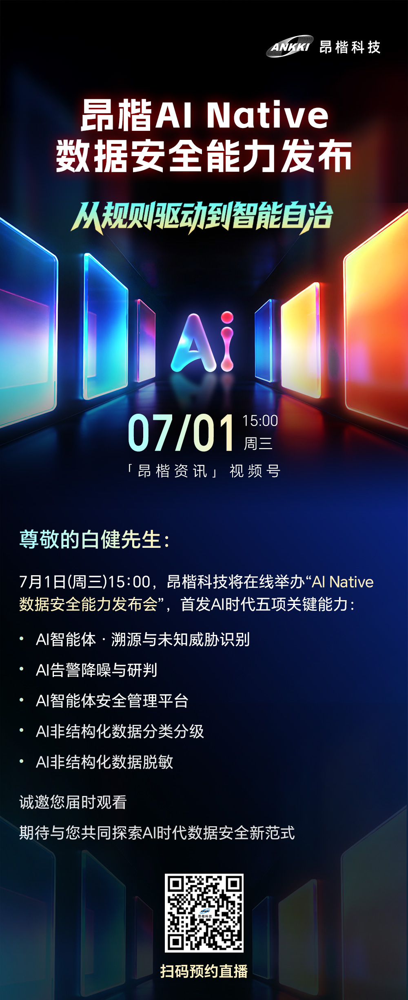
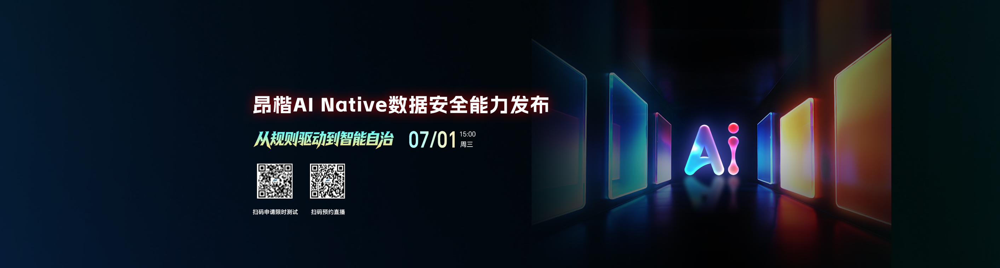
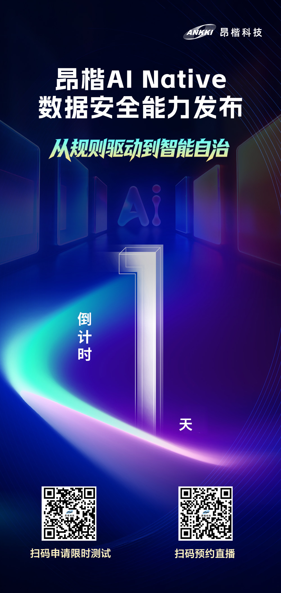
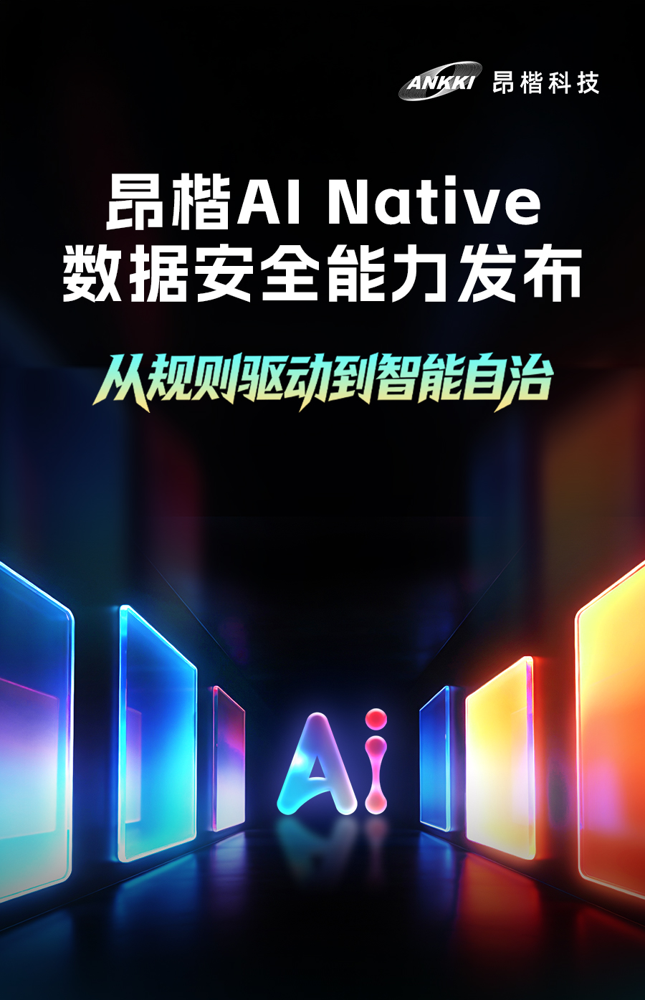
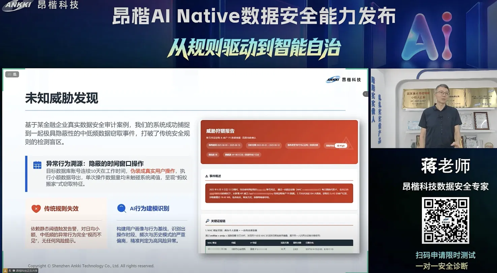
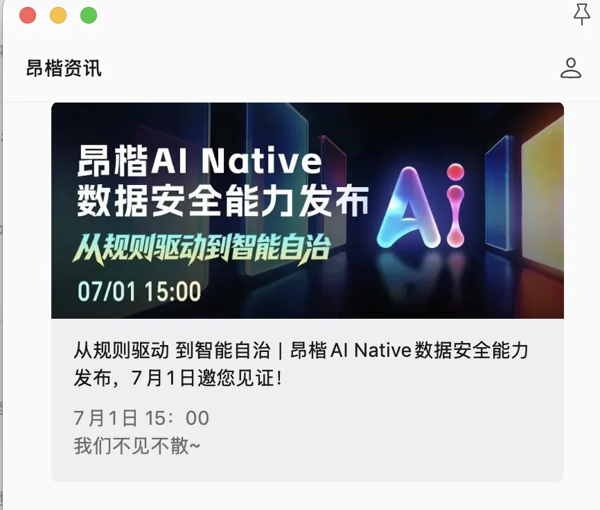
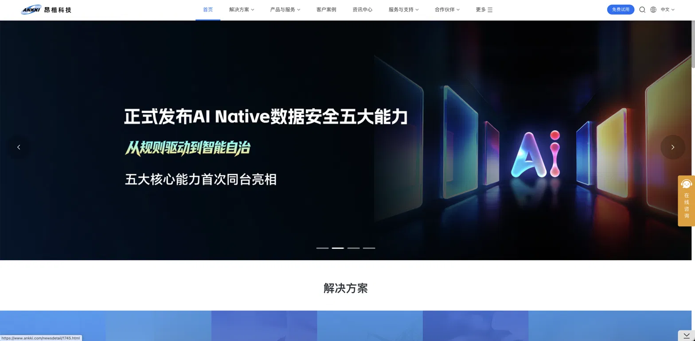
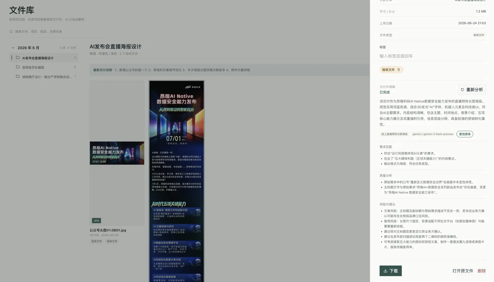
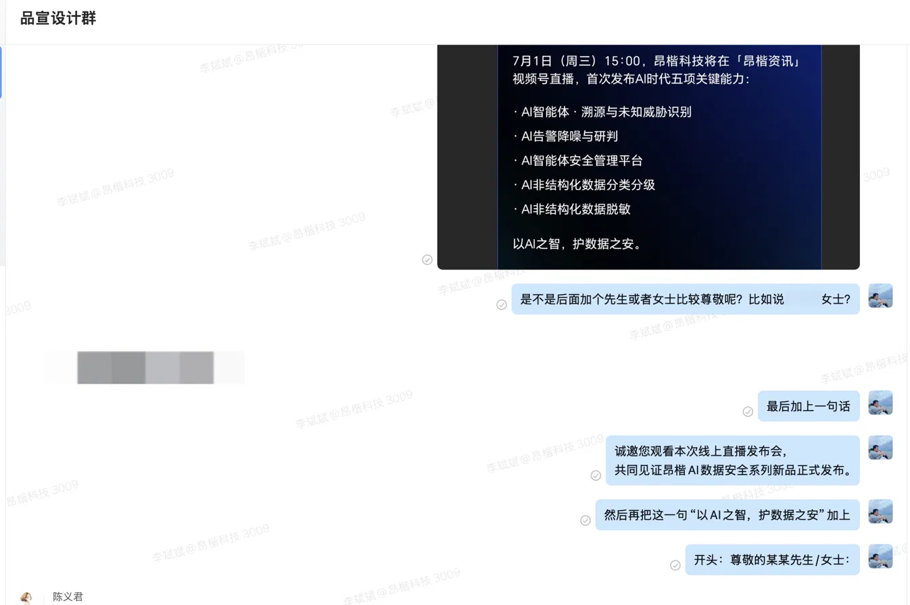

让分散点击形成同一场事件
邀请、倒计时、直播封面、PPT 与发布战报必须共享同一套识别语言。
昂楷 AI Native 数据安全能力发布会。我独立完成从发布前预热、直播当天到发布后宣传的全链路视觉物料，并用自研设计质检 Agent 为每一件物料把关。

01 — 项目命题
失去线下声场和舞台后，连续出现的视觉物料需要同时建立期待、聚拢观看，并承接发布后的传播。
邀请、倒计时、直播封面、PPT 与发布战报必须共享同一套识别语言。
从文案建议、物料排序、视觉系统到最终上线，全部由我独立推进。
深蓝空间、渐变玻璃与高亮 AI 意象先建立识别底盘；邀请负责邀约，倒计时负责催发，直播页负责讲清内容。
检查范围覆盖格式、主题偏差和发布入口风险，最终修改由我判断。
02 — 传播时间线
每个节点承担不同任务：先制造期待，再集中引爆，最后让内容在官网与公众号继续被看见。
重新梳理邀请文案与正式语气，让邀约更像一场值得预留时间的发布。

把主题、议程与参与方式压缩为一条可转发、可完整阅读的邀请路径。
用统一的空间与光感语言，让发布会在正式开始前先进入品牌主场。

倒计时连续露出，统一时间、入口与核心利益点。

移动端封面承担入口识别，让用户在信息流中快速停下。

主持人与演示内容变化时，背景仍持续提供统一的视觉主场。

直播结束后，视觉继续服务复盘与二次传播。

官网 Banner 随发布节点更新，让一次直播继续在品牌主页上工作。

左右滑动查看完整传播链路
03 — 直播现场
直播画面、发布 PPT 与封面共同构成用户真正看到的“会场”。内容按“定调—建立问题—展开能力—平台收束”推进，各阶段在统一视觉下完成自己的任务。
27页发布内容
从品牌开场进入安全问题，再用机制、界面与演示逐层证明能力，最后回到平台架构和用户价值。下方每一阶段都可直接点击查看对应起始页。
开场定调 · 主题、口号与议程先建立共同语言
第 01 页
04 — 质量机制
这次 Agent 给出两项具体检查结果：主标题与最初诉求不一致，我据此确认统一为“AI Native”；二维码则被列为发布前必须完成真机测试的风险项。
需求清单提供判断基准，Agent 负责定位偏差，我负责决定是否修改。截图中的两个标记对应这次交付里真实发生的判断，点击或悬停即可查看。

05 — 真实落地
设计从内部协作进入公众号、官网与直播现场。三类证据依次对应沟通判断、公开发布和长期沉淀。

06 — 项目复盘
每张物料只解决当前阶段最重要的问题，避免所有信息平均用力。
统一气质贯穿邀请、预热、直播与发布后传播，让用户始终知道它们属于同一事件。
把重复检查交给 Agent，设计师才能把时间放在叙事、判断与最终质量上。
Meridian 独立完成昂楷 AI Native 数据安全能力发布会的全链路视觉工作，从发布前预热、直播当天到发布后持续传播，建立统一的事件识别。
项目覆盖多个传播节点，分别完成邀请函、倒计时、官网 Banner、直播封面、直播背景与完整发布 PPT，让分散的线上触点被识别为同一场发布会。
在视觉执行之外，他主动参与邀请文案的语气与收尾判断，并通过自研设计质检 Agent 发现主题偏差与二维码测试风险，降低高频交付中的低级错误。
最终物料真实进入公众号、官网与直播现场。一次发布会结束后，完整的视觉语言仍继续承担品牌传播与内容沉淀的作用。
问问 AI 关于 Meridian